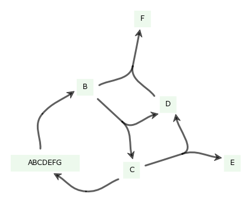
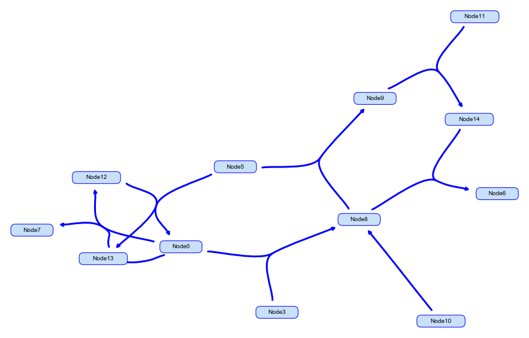
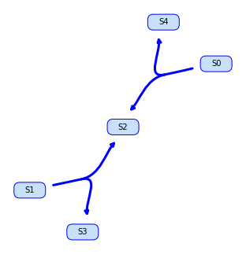
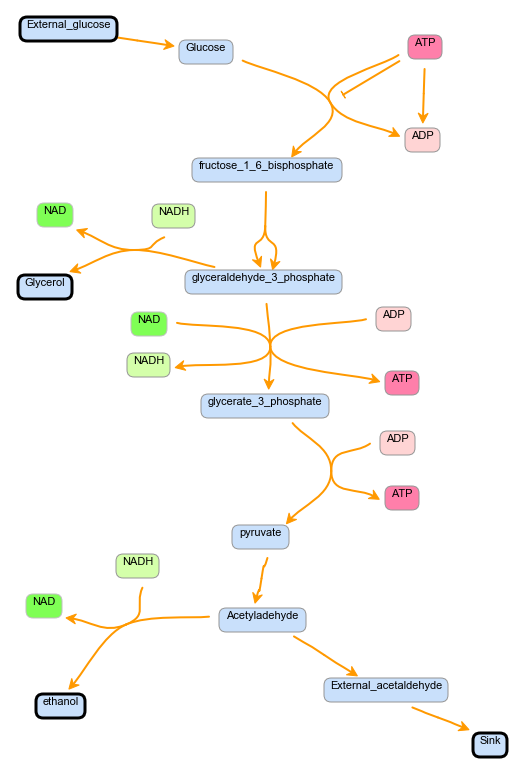
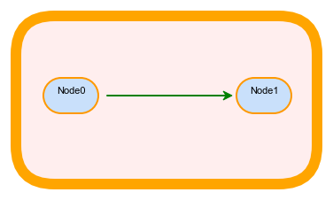
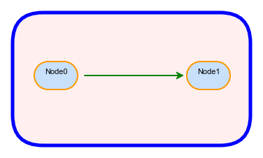
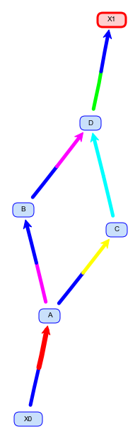

Image Gallery¶
These images were drawn by libsbml-draw.
(Note: The scripts used can be found in the files starting with mtest in the tests directory of
the libsbml-draw repository.)
Larger Pathway - applied render information from SBML file, including polygon line endings
Complicated Nodes - SBML was generated by the antimony package
Randomly Generated Network - lab program was used to randomly generate an SBML source file
Glycolysis - applied render information from SBML file, including polygon line endings
Simple Render Global - applied render information from SBML file, including polygon nodes and line endings
Simple Render Local - changed the render information using libsbml-draw
Simple Model - demonstrates that render can apply to the curve level, not just the reaction level
